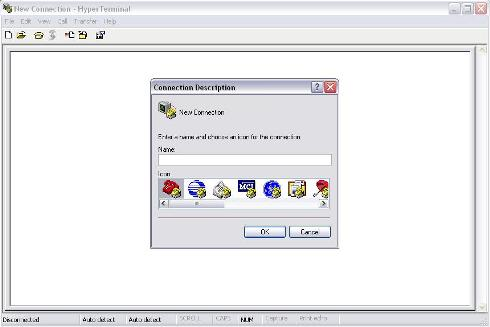
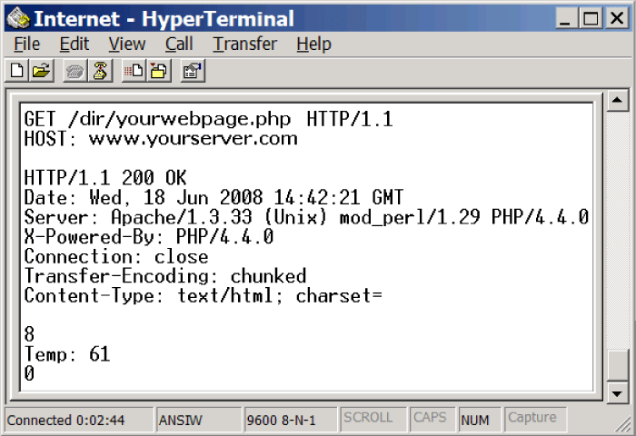
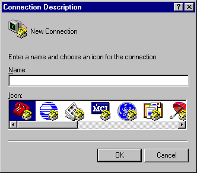

با سلام.
Microsoft HyperTerminal
در گذشته یک برنامه مفید و کاربردی ای بود به نام Microsoft HyperTerminal که خیلی مورد استفاده برای متخصصین شبکه و سخت افزار به منظور برقراری ارتباط مستقیم با قطعات سخت افزاری و شبکه ای قرار می گرفت. از این برنامه برای برقراری ارتباط با دیگر رایانه ها، بوردهای تبلیغاتی، سرویس های آنلاین و telnet زدن به سایتها با استفاده از یک مودم تلفنی و یا ارتباط شبکه ای و یا حتی با کابل سریال یا com استفاده می گردیده است. شرکت مایکروسافت این برنامه همراه با نسخه xp ویندوز ارائه کرده بود و از نسخه 7 به بعد این برنامه ارائه نشده است.



GTKTerm
از جمله نرم افزارهایی که در اوبونتو می تواند به جای برنامه Microsoft HyperTerminal برای کا با پورتهای سریال به کار رود نرم افزار GTKTerm می باشد. این نرم افزار، یک برنامه بسیار قوی، ساده و آزاد در این زمینه است.

ویژگی های این برنامه:
- پنجره ترمینال برای پورت سریال
- راحتی تنظیم پارامترهای پورت(
speed,parity,bits,stopbits,flow control) - استفاده از termios API
- امکان ارسال فایل (به صورت داده های ساده و نه با استفاده از هیچ پروتوکلی)
- تأخیر در پایان خط در زمان ارسال فایل
- حروف خاص قبل از ارسال یک فایل منتظر هستند
- امکان کنترل خطوط به صورت دستی(DTR, CTS)
- دریافت وضعیت کنترل خطوط(RTS, CD, DSR, RI)
- نمایش
Hexadecimal